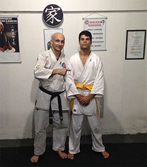
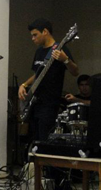
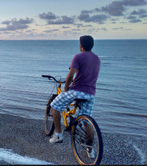

Curso o Bacharelado em Ciência da Computação da UFPB e estudo Desenvolvimento Web e Mobile. Atualmente focado em tecnologias Front-End. As minhas habilidades estão ligadas ao WordPress, HTML, CSS, JS e frameworks como Bootstrap.
Além disso, tenho noções de Java, Python e PHP. Minha experiência profissional em TI é basicamente acadêmica, com projetos desenvolvidos em extensão ou disciplinas. Este site é mais uma forma de apresentar minhas habilidades e meu portfólio.
Já cursei Engenharia Civil, entre 2014 e 2016. Também gosto de pedalar, karate e instrumentos musicais.😄
  